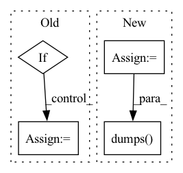

Pattern ID :1718

Before Change
mask_background[mask_background != 0] = 1.0
mask_background = 1.0 - mask_background
for key_label in d["label_names"].keys():
if key_label != "background":
// Add POSITIVE and NEGATIVE (background) guidance based on discrepancy
d[self.guidance][key_label], d[self.guidance]["background"] = self._apply(
guidance[key_label],
discrepancy[key_label],
mask_background,
guidance["background"],
weight_map[key_label] if weight_map is not None else weight_map,
)
all_is_pos[key_label] = self.is_pos
all_is_neg[key_label] = self.is_neg
self.is_pos = False
self.is_neg = False
d["is_pos"] = all_is_pos
After Change
tmp_gui = guidance[key_label]
tmp_gui = tmp_gui.tolist() if isinstance(tmp_gui, np.ndarray) else tmp_gui
tmp_gui = json.loads(tmp_gui) if isinstance(tmp_gui, str) else tmp_gui
self.tmp_guidance[key_label] = tmp_gui
// Add guidance according to discrepancy
all_is_pos = {}
all_is_other = {}
for key_label in d["label_names"].keys():
// Add guidance based on discrepancy
self.add_guidance(self.tmp_guidance[key_label][0], discrepancy[key_label], d["label_names"], d["label"])
all_is_pos[key_label] = self.is_pos
all_is_other[key_label] = self.is_other
self.is_pos = False
self.is_other = False
d["is_pos"] = all_is_pos
d["is_neg"] = all_is_other
// Convert tmp_guidance back to json
for key_label in d["label_names"].keys():
d[self.guidance][key_label] = json.dumps(np.asarray(self.tmp_guidance[key_label]).astype(int).tolist())
//
return d
In pattern: SUPERPATTERN
Frequency: 3
Non-data size: 4
Instances
Fragment ID: 8146204
Project Name: project-monai/monailabel
Commit Name: d406dc00dfce358803e7db6d0322beaecba6dd8a
Time: 2021-11-08
Author: diazandr3s@gmail.com
File Name: monailabel/deepedit/multilabel/transforms.py
M Class Name: PosNegClickProbAddRandomGuidanceCustomd
N Class Name: PosNegClickProbAddRandomGuidanceCustomd
M Method Name: __call__(2)
N Method Name: __call__(2)
M Parent Class: MapTransform,Randomizable
N Parent Class: MapTransform,Randomizable
M File Name: monailabel/deepedit/multilabel/transforms.py
N File Name: monailabel/deepedit/multilabel/transforms.py
M Start Line: 630
M End Line: 657
N Start Line: 609
N End Line: 641
'>
Before Change
def _task_func(task, method, callback=None):
base_dir = os.path.dirname(os.path.dirname(os.path.dirname(os.path.realpath(__file__))))
script = "run_monailabel_app.bat" if any(platform.win32_ver()) else "run_monailabel_app.sh"
if os.path.exists(os.path.realpath(os.path.join(base_dir, "scripts", script))):
script = os.path.realpath(os.path.join(base_dir, "scripts", script))
request = task["request"]
cmd = [
After Change
gpus = gpus if gpus else "all"
if gpus != "all":
my_env["CUDA_VISIBLE_DEVICES"] = gpus
request["gpus"] = "all"
if method == "train":
my_env["MONAI_LABEL_DATASTORE_AUTO_RELOAD"] = "false"
my_env["MASTER_ADDR"] = "127.0.0.1"
my_env["MASTER_PORT"] = "1234"
cmd = [
sys.executable,
"-m",
"monailabel.interfaces.utils.app",
"-m",
method,
"-r",
json.dumps(request, separators=(",", ":")),
]
logger.info(f"COMMAND:: {" ".join(cmd)}")
'>
Fragment ID: 8146197
Project Name: project-monai/monailabel
Commit Name: 62c4207eaf8efe94cd8123b6470f672206f8ece3
Time: 2021-10-17
Author: sachidanand.alle@gmail.com
File Name: monailabel/utils/async_tasks/utils.py
M Class Name: AnonimousClass
N Class Name: AnonimousClass
M Method Name: _task_func(3)
N Method Name: _task_func(3)
M Parent Class:
N Parent Class:
M File Name: monailabel/utils/async_tasks/utils.py
N File Name: monailabel/utils/async_tasks/utils.py
M Start Line: 36
M End Line: 48
N Start Line: 33
N End Line: 55
'>
Before Change
returns))
// update best_returns
if returns > self._best_returns:
self._best_returns = returns
// log raw returns
self._writer.add_scalar("returns", returns, step="sample_episode")
After Change
def _log(self, start_info, sample_info):
mean_returns = np.mean(sample_info["returns"])
evaluation_msg = \
{
"Conditions":
{
"sample_frames": start_info.sample_frames,
"sample_episodes": start_info.sample_episodes,
"train_frames": start_info.train_frames
},
"Result":
{
"collected_frames": sum(sample_info["frames"]),
"collected_episodes": len(sample_info["frames"]),
"mean returns": round(mean_returns, 2)
}
}
self._logger.info("Evaluation:" + json.dumps(evaluation_msg, indent=2))
// update best_returns
self._best_returns = max(max(sample_info["returns"]),
'>
Fragment ID: 8146210
Project Name: syuntoku14/pytorch-rl-il
Commit Name: f45954eb3b57a73c502fbff6a97891402fdfdb9d
Time: 2020-04-13
Author: syuntoku14@gmail.com
File Name: rlil/experiments/trainer.py
M Class Name: Trainer
N Class Name: Trainer
M Method Name: _log(3)
N Method Name: _log(2)
M Parent Class:
N Parent Class:
M File Name: rlil/experiments/trainer.py
N File Name: rlil/experiments/trainer.py
M Start Line: 64
M End Line: 80
N Start Line: 70
N End Line: 95